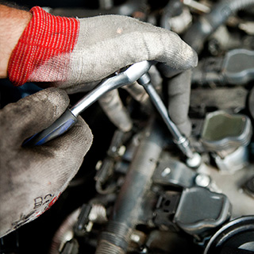
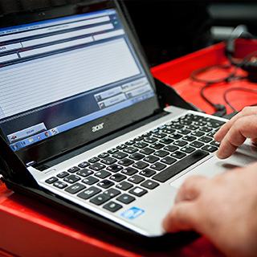
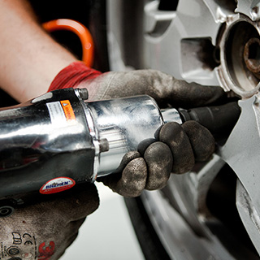
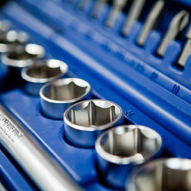

Mecanica General
- Revisión y chequeo de la unidad, sistemas de gestión, orden de marcha y encendido
- Lubricación
- Mantenimientos programados
- Sistemas de frenos

Testeo computarizado
- Análisis y verificación de fallas electrónicas mediante sistemas diversos OBDII
- Confección árbol de diagnosis
- Chequeo de módulos electrónicos

Cambio de cubiertas
- Revision de cubiertas
- Cambio total por garantia
- Alineacion
- Balanceo

Cambio de aceite
- Cambio de aceite
- Cambio de filtros
- Revision de sistema de lubricación del motor

Cajas automaticas
- Verificación de gestión en cajas automáticas, secuenciales (DSG, Multitronic, Stronic y Tiptronic).
- Cajas de reducción (IRD)
- Lubricación y consejos de mantenimiento